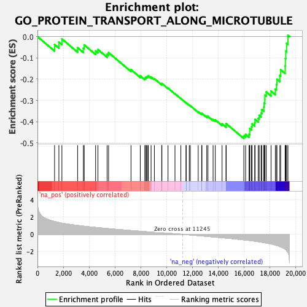

| | | Dataset | Recurrence |
| Phenotype | NoPhenotypeAvailable |
| Upregulated in class | na_neg |
| GeneSet | GO_PROTEIN_TRANSPORT_ALONG_MICROTUBULE |
| Enrichment Score (ES) | -0.4791783 |
| Normalized Enrichment Score (NES) | -2.1359634 |
| Nominal p-value | 0.0 |
| FDR q-value | 0.045878015 |
| FWER p-Value | 0.198 |
Table: GSEA Results Summary

Fig 1: Enrichment plot: GO_PROTEIN_TRANSPORT_ALONG_MICROTUBULE
Profile of the Running ES Score & Positions of GeneSet Members on the Rank Ordered List
| SYMBOL | RANK IN GENE LIST | RANK METRIC SCORE | RUNNING ES | CORE ENRICHMENT | | 1 | IFT80 | 1326 | 1.480 | -0.0373 | No |
| 2 | BBS12 | 1661 | 1.368 | -0.0260 | No |
| 3 | IFT57 | 1893 | 1.291 | -0.0110 | No |
| 4 | SSX2IP | 3111 | 1.029 | -0.0521 | No |
| 5 | PURA | 3558 | 0.948 | -0.0552 | No |
| 6 | TTC21A | 3620 | 0.936 | -0.0389 | No |
| 7 | RABL2B | 4506 | 0.801 | -0.0676 | No |
| 8 | CEP131 | 4685 | 0.773 | -0.0607 | No |
| 9 | KIF1A | 5395 | 0.672 | -0.0831 | No |
| 10 | DLG2 | 5511 | 0.655 | -0.0754 | No |
| 11 | CAMSAP3 | 7246 | 0.441 | -0.1553 | No |
| 12 | TTC26 | 7965 | 0.359 | -0.1847 | No |
| 13 | KIF17 | 8322 | 0.318 | -0.1964 | No |
| 14 | IFT20 | 8365 | 0.313 | -0.1920 | No |
| 15 | HSPB1 | 8445 | 0.305 | -0.1897 | No |
| 16 | IFT27 | 8517 | 0.299 | -0.1872 | No |
| 17 | LCA5L | 8586 | 0.293 | -0.1845 | No |
| 18 | TRAF3IP1 | 8803 | 0.269 | -0.1900 | No |
| 19 | MAP1A | 9057 | 0.241 | -0.1980 | No |
| 20 | IFT43 | 9625 | 0.177 | -0.2235 | No |
| 21 | SFPQ | 9640 | 0.176 | -0.2205 | No |
| 22 | IFT52 | 10113 | 0.126 | -0.2422 | No |
| 23 | TRIP11 | 10654 | 0.067 | -0.2685 | No |
| 24 | IFT140 | 11108 | 0.017 | -0.2914 | No |
| 25 | TTC30A | 11513 | -0.029 | -0.3116 | No |
| 26 | LCA5 | 11519 | -0.030 | -0.3112 | No |
| 27 | TNPO1 | 11761 | -0.058 | -0.3224 | No |
| 28 | SSNA1 | 11841 | -0.068 | -0.3250 | No |
| 29 | RPGR | 12453 | -0.141 | -0.3535 | No |
| 30 | TTC21B | 12719 | -0.173 | -0.3635 | No |
| 31 | PCM1 | 12741 | -0.176 | -0.3609 | No |
| 32 | CLUAP1 | 13113 | -0.229 | -0.3752 | No |
| 33 | KIF5A | 13207 | -0.238 | -0.3751 | No |
| 34 | KIFAP3 | 13605 | -0.294 | -0.3893 | No |
| 35 | IFT74 | 13776 | -0.317 | -0.3915 | No |
| 36 | MAPK8IP3 | 14301 | -0.384 | -0.4104 | No |
| 37 | DYNLL2 | 14609 | -0.423 | -0.4174 | No |
| 38 | IFT172 | 14620 | -0.425 | -0.4090 | No |
| 39 | HNRNPU | 15986 | -0.633 | -0.4660 | Yes |
| 40 | MAK | 16126 | -0.652 | -0.4596 | Yes |
| 41 | KIF3A | 16393 | -0.696 | -0.4587 | Yes |
| 42 | TCTEX1D2 | 16444 | -0.706 | -0.4466 | Yes |
| 43 | DYNC2LI1 | 16445 | -0.706 | -0.4319 | Yes |
| 44 | IFT81 | 16583 | -0.732 | -0.4237 | Yes |
| 45 | KIF3B | 16625 | -0.740 | -0.4104 | Yes |
| 46 | DYNLL1 | 16833 | -0.784 | -0.4047 | Yes |
| 47 | IFT46 | 16856 | -0.789 | -0.3894 | Yes |
| 48 | TERF2 | 17105 | -0.844 | -0.3845 | Yes |
| 49 | DYNC2H1 | 17177 | -0.859 | -0.3703 | Yes |
| 50 | BAG3 | 17324 | -0.893 | -0.3592 | Yes |
| 51 | TUB | 17380 | -0.907 | -0.3431 | Yes |
| 52 | IFT88 | 17539 | -0.946 | -0.3315 | Yes |
| 53 | WDR60 | 17556 | -0.949 | -0.3126 | Yes |
| 54 | DYNLRB1 | 17616 | -0.967 | -0.2955 | Yes |
| 55 | WDR19 | 17618 | -0.968 | -0.2753 | Yes |
| 56 | RAB27B | 17724 | -0.992 | -0.2601 | Yes |
| 57 | KIF5B | 18095 | -1.107 | -0.2560 | Yes |
| 58 | KIF5C | 18428 | -1.227 | -0.2475 | Yes |
| 59 | WDR35 | 18515 | -1.269 | -0.2255 | Yes |
| 60 | WDR34 | 18550 | -1.285 | -0.2005 | Yes |
| 61 | ARL3 | 18780 | -1.407 | -0.1829 | Yes |
| 62 | HSPB11 | 18840 | -1.445 | -0.1559 | Yes |
| 63 | KIF3C | 19187 | -1.703 | -0.1382 | Yes |
| 64 | TTC30B | 19203 | -1.721 | -0.1031 | Yes |
| 65 | IFT22 | 19238 | -1.770 | -0.0680 | Yes |
| 66 | DYNLRB2 | 19305 | -1.879 | -0.0322 | Yes |
| 67 | IFT122 | 19403 | -2.083 | 0.0062 | Yes |
Table: GSEA details [plain text format]
Fig 2: GO_PROTEIN_TRANSPORT_ALONG_MICROTUBULE: Random ES distribution
Gene set null distribution of ES for GO_PROTEIN_TRANSPORT_ALONG_MICROTUBULE